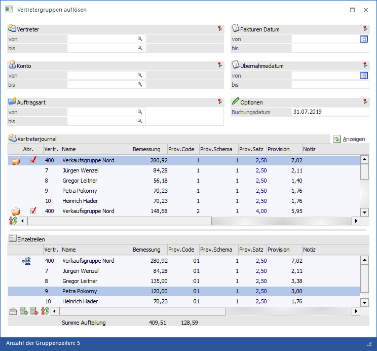
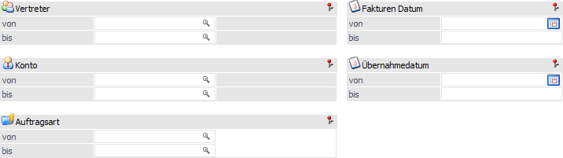
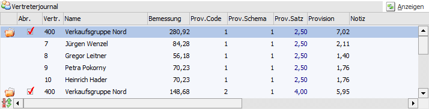
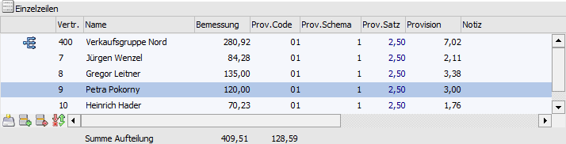

Sofern in einer Vertretergruppe die Option "Gruppe vor Übernahme aufteilen" nicht aktiviert wurde kann nach durchgeführter Provisionsübernahme die Provision bzw. die Bemessungsgrundlage aufgeteilt werden. Dies kann im Menüpunkt…
1 WinLine FAKT
1 Auswertungen
1 Vertreterauswertungen
1 Übernahmejournal
1 Vertretergruppen auflösen
… erfolgen.

Folgende Selektionskriterien und Bearbeitungsbereiche stehen zur Verfügung:
Selektion

Ø Vertreter von / bis
An dieser Stelle kann eine Selektion nach den Vertretergruppen erfolgen, welche aufgelöst werden sollen.
Ø Konto von / bis
In diesen Feldern kann eine Eingrenzung auf die Kunden vorgenommen werden, deren Fakturen aufgelöst werden sollen.
Ø Auftragsart von / bis
Bei der Erfassung eines Beleges kann im Belegkopf eine Auftragsart hinterlegt werden, nach welcher an dieser Stelle selektiert werden kann.
Ø Fakturen Datum von / bis
Mit dieser Einschränkung kann entschieden werden, von welchem Zeitraum die Fakturen sein sollen.
Ø Übernahmedatum von / bis
Mit dieser Selektion kann auf das Übernahmedatum aus der Provisionsübernahme eingegrenzt werden.
Optionen
Ø Buchungsdatum
In diesem Feld kann das Datum angegeben werden zu dem das Auflösen gebucht werden soll. Dieses Datum wird mit einem, in der Vertretergruppe hinterlegtem, Gültigkeitsbereich gegen geprüft und entsprechend die Aufteilung herangezogen.
Anzeigen
Ø Anzeigen
Durch Anwahl des Buttons "Anzeigen" werden alle Zeilen, welche noch nicht aufgeteilt wurden, aus dem Vertreterübernahmejournal gemäß Selektion in der Tabelle "Vertreterjournal" ausgewiesen.
Tabelle "Vertreterjournal"

Durch Anwahl des Buttons "Anzeigen" werden alle Zeilen, welche noch nicht aufgeteilt wurden, aus dem Vertreterübernahmejournal gemäß Selektion in der Tabelle "Vertreterjournal" ausgewiesen.
Innerhalb der Tabelle werden die Gruppen samt zugehöriger Vertreter inklusive Bemessung, Provisionscode (PC), Provisionsschema (PS), etc. dargestellt.
Hinweis
Der Detailgrad innerhalb der Tabelle ist abhängig davon, ob in den Vertretergruppen die Option "Aufteilen nach der Übernahme inkl. Detailinformationen" (im Vertreterstamm) gesetzt wurde oder nicht. Ist diese Option aktiviert, so wird pro Journalzeile die Aufteilung inkl. "aller Informationen" (Beleginformationen) durchgeführt. D.h. die Informationen die im Normalfall komprimiert werden und somit nicht mehr zur Verfügung stehen, bleiben in diesem Fall erhalten. Weiteres werden in den Tabellen "Vertreterjournal" und "Einzelzeilen" zu den entsprechenden Zeilen die Artikelnummer sowie die Artikelbezeichnung aus dem jeweiligen Beleg angezeigt. Mittels Doppelklick auf die Artikelnummer oder die Artikelbezeichnung wird der Beleg in einer Belegvorschau geöffnet.
Ø Abr.
Mit Hilfe der Checkbox "Abr." wird definiert, ob die Vertretergruppe aufgelöst werden soll.
Hinweis
Gibt es Vertretergruppen, welche innerhalb einer Vertretergruppe aufgeteilt werden sollten, so werden diese nicht automatisch zur Aufteilung aktiviert; dies muss manuell erfolgen.
Tabellenbuttons "Vertreterjournal"
Ø Wiederherstellen
Dieser Button bewirkt (in der oberen Tabelle) eine Wiederherstellung des Originalzustandes bei schon geänderten und gespeicherten Zeilen der unteren Tabelle.
Ø Ausgabe Excel
Durch Anwahl des Buttons "Ausgabe Excel" wird der Inhalt der Tabelle an Microsoft Excel übergeben.
Ø Tabelleneinstellungen speichern
Die Spalten einer Tabelle können grundsätzlich an beliebige Positionen verschoben, bzw. in der Breite entsprechend angepasst werden. Durch Anwahl des Buttons "Tabelleneinstellungen speichern" werden die Einstellungen benutzerspezifisch gespeichert und bei dem nächsten Aufruf des Programmpunktes wieder vorgeschlagen.
Ø Gesamteinstellungen speichern…
Im Gegensatz zu "Tabelleneinstellungen speichern" können mit "Gesamteinstellungen speichern" mehrere Tabellenaufbauten gespeichert und nach Wunsch geladen werden. Zusätzlich werden Sonderfunktionen der Tabelle (z.B. "Spalte gruppieren") ebenfalls bei der Speicherung bedacht.
Tabelle "Einzelzeilen"

Durch Auswahl einer Journalzeile in der oberen Tabelle, wird die Tabelle "Einzelzeilen" mit den Daten der jeweiligen Vertreteraufteilung befüllt.
An dieser Stelle können die folgenden Daten der Vertreter editiert werden:
ü Bemessung
ü Provisionscode
ü Provisionsschema
ü Provisionssatz
ü Provision
ü Notiz
Achtung
Die Speicherung der manuellen Änderungen erfolgt durch Anwahl des Tabellenbuttons "Speichern".
Hinweis
In der Fußzeile werden die Summen der Aufteilungsbemessungsgrundlagensumme, sowie eine eventuelle Differenz zur Gruppensumme, angezeigt.
Durch Drücken der F3-Taste im Feld "Bemessung" kann die Differenz in das aktuelle Bemessungsfeld übernommen werden.
Tabellenbuttons "Einzelzeilen"
Ø Speichern
Durch Anwahl dieses Buttons werden die Änderungen für die Journalzeile in die obere Tabelle übernommen.
Ø Zeile einfügen
Mit Hilfe des Buttons "Zeile einfügen" können zusätzliche Zeilen in die Tabelle eingefügt werden.
Ø Zeile entfernen
Mit Hilfe des Buttons "Zeile entfernen" können gesamte Zeilen aus der Tabelle entfernt werden (ausgenommen hiervon ist die "Hauptzeile", sprich die Vertretergruppenzeile).
Ø Wiederherstellen
Durch Anwahl dieses Buttons werden die aktuellen Vertreteraufteilungszeilen neu geladen; d.h. manuell veränderte Zeilen verworfen und die Einstellungen der oberen Tabelle wieder übernommen.
Ø Ausgabe Excel
Durch Anwahl des Buttons "Ausgabe Excel" wird der Inhalt der Tabelle an Microsoft Excel übergeben.
Ø Tabelleneinstellungen speichern
Die Spalten einer Tabelle können grundsätzlich an beliebige Positionen verschoben, bzw. in der Breite entsprechend angepasst werden. Durch Anwahl des Buttons "Tabelleneinstellungen speichern" werden die Einstellungen benutzerspezifisch gespeichert und bei dem nächsten Aufruf des Programmpunktes wieder vorgeschlagen.
Ø Gesamteinstellungen speichern…
Im Gegensatz zu "Tabelleneinstellungen speichern" können mit "Gesamteinstellungen speichern" mehrere Tabellenaufbauten gespeichert und nach Wunsch geladen werden. Zusätzlich werden Sonderfunktionen der Tabelle (z.B. "Spalte gruppieren") ebenfalls bei der Speicherung bedacht.
Buttons
Ø Ok
Durch Anwahl des Buttons "Ok" bzw. der Taste F5 werden die ausgewählten Vertreterjournalzeilen aufgelöst.
Ø Ende
Mit Hilfe des Buttons "Ende" bzw. der Taste ESC wird das Fenster geschlossen und keine Auflösung durchgeführt.